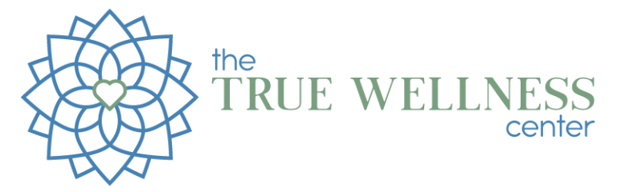
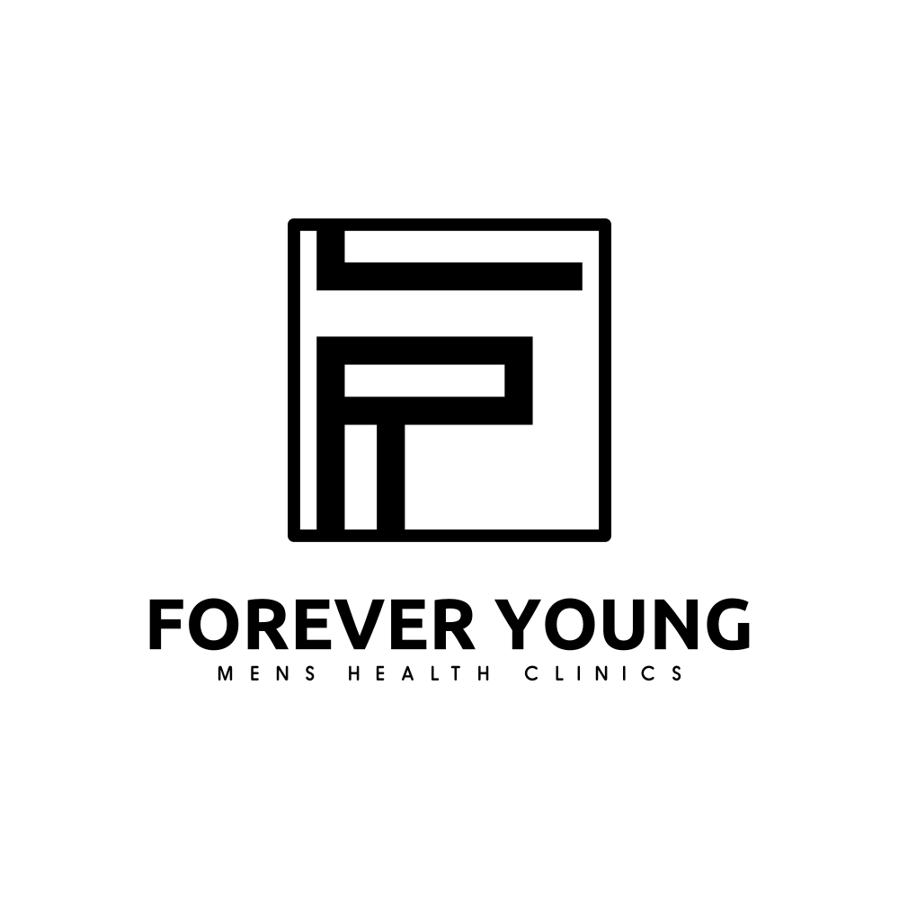

Success Stories
Hear from our successful practitioners


Done-for-you automation for functional and integrative health practitioners, built on GoHighLevel to streamline your practice and reclaim your time.
Trusted by practitioners like



You built a great practice. But your follow-up system is a patchwork of sticky notes, missed calls, and emails you keep meaning to send.
You know GHL can do more. You have the tool. But you do not have the time to learn it, build in it, or keep it moving every month.
You hired a VA. It helped a little. But they are not a GHL specialist, and you are still the one figuring out what to build and how to explain it to them.
You looked at agencies. They quoted you $10K+ for a big custom build you are not even sure you need yet. You just want consistent progress, every single month.
You do not need a massive one-time build. You need compounding automation progress, from people who actually understand how functional medicine practices run.
Greatclicks.io is a done-for-you automation service built specifically for integrative and functional medicine practitioners. We work inside your GoHighLevel account every single month, building the workflows, sequences, and funnels that move your practice forward.
This is not a course. Not a template library. Not a one-time setup. It is an ongoing build service that treats your GHL account like a living system, one that gets smarter and more efficient every month.
Every workflow is built from scratch for your practice. We map your patient journey, understand how your team operates, and build automations that fit, not ones you have to bend your process around.
We have hands-on experience with Biocanic, Cerbo, Practice Better, Optimantra, and Jane App inside GHL. We understand functional medicine workflows and build accordingly.
Every month your system gets better. More touchpoints automated. More leads nurtured. More time saved. It compounds because we never stop building.
We get on a call, review your current GHL setup, and figure out the right starting point. If you need The Launchpad, we scope it here and get it scheduled. If you are ready to go straight into the subscription, we build your first month's queue on this call and start immediately.
Time required from you: 60 minutes.Our team works inside your GHL account throughout the month. You submit requests through the portal, we build them out, and you receive an Email or Loom walkthrough as each deliverable is completed. No chasing. No check-ins required.
Time required from you: Zero.We confirm everything is live and working, walk you through each deliverable, and lock in your priorities for the next cycle.
Time required from you: 30 minutes.Your subscription renews. Your queue resets. Every month, your automation system gets more complete, more connected, and more effective.
The Launchpad is a one-time, fixed-scope build that sets up your complete client conversion system inside GHL before your subscription starts. If you are new to GHL or have nothing built yet, you need it. If you already have a working setup, you likely go straight into the subscription. We confirm this on your onboarding call.
One complete, functional workflow is one deliverable. A 3-step appointment reminder sequence is one workflow. A 5-email nurture sequence is one workflow. A VSL funnel with connected automation is one funnel deliverable. We confirm scope with you at the start of each build cycle so there are no surprises.
No. Both plans are month-to-month. You can cancel anytime with 30 days notice. No penalties, no lock-in.
No. Each month's deliverables are scoped for that cycle. In practice, the build queue rarely has unused capacity because we plan ahead together on your onboarding call.
We have hands-on integration experience with Biocanic, Cerbo, Practice Better, Optimantra, and Jane App inside GHL. EMR integration support is included in the Growth plan.
Both plans include access to the Greatclicks request portal. You submit your requests there, we pick them up in your active build cycle, and you get an Email or Loom walkthrough when each one is done.
Yes. You can upgrade or downgrade at the start of any new build cycle.
We flag it before touching anything. Out-of-scope work is quoted separately and only starts once you approve.
Yes. You keep full ownership and access at all times. We work inside your sub-account and hand everything off through your portal and walkthrough videos.
Possibly. If you already have a working pipeline, core automations, and at least one funnel live, you can go straight into the subscription. We review your setup on the onboarding call and tell you exactly what makes sense.
If you are tired of doing things manually, tired of watching leads fall through the cracks, and tired of knowing GHL can do more but not having the time or team to build it, this is the service for you.
Get Pricing. We will review your setup, confirm which plan fits, and either get The Launchpad scheduled or kick off your first build cycle on the spot. No pitch. No pressure. Just a straight conversation about what your practice needs and how we can build it.
Built for functional medicine. Powered by GoHighLevel.